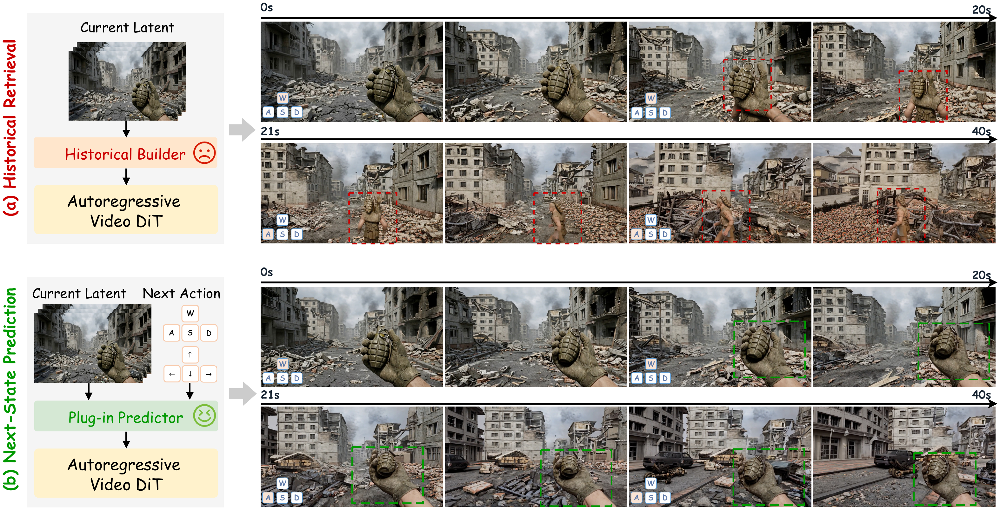
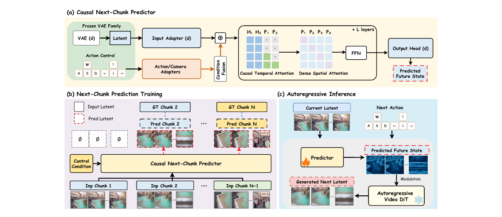

FutureWorld A Plug-and-Play Causal Next-State Predictor for Interactive Video World Exploration
1Zhejiang University 2National University of Singapore 3Zhejiang Lab 4Bournemouth University 5vivo BlueImage *Corresponding authors

Interactive video world models aim to follow user actions while maintaining scene consistency over extended interactions. History-based methods reuse generated latents to preserve scene content, but three limitations of this reuse contribute to error recirculation. (1) The latent generated at each interaction is retained as history, potentially containing blurred details, geometric distortions, or semantic drift. (2) Although retrieved historical content matches the current scene, it can still contain errors that are carried into the next chunk. (3) New outputs then become history for later interactions, potentially reinforcing the same errors through repeated reuse.
To limit this cycle, we predict the future scene state from the current generated latent and the next action before generating the next interaction’s video chunk. This future-state prior guides the next chunk, with the aim of reducing the errors carried forward from history. We propose a plug-and-play Causal Next-Chunk Predictor (C-NCP) with cross-model adaptability and prediction-guided modulation. C-NCP is integrated into four base generators and evaluated across three benchmarks for interactive long-video generation and action-conditioned world modeling. The experiments show reduced error accumulation and improved long-horizon consistency across generation settings.
01 — Model
One predictor, four frozen generators.

VAE-specific input adapters map each generator’s latent into a shared space. A causal spatiotemporal trunk forecasts the next chunk, and an output head returns it to that model’s latent channels.
Stage I mixes predicted and ground-truth chunks so early forecasts stay learnable. Stage II drops the ground-truth addition and trains the same predictor on its own inter-chunk feedback. Within each chunk, teacher forcing remains.
At each interaction the predictor reads the current latent and the next action. Modulation writes that future-state prior into a frozen autoregressive video DiT before the new chunk joins history.
02 — Results
The same gain, on every base model.
All reported videos are 60 seconds. On RealEstate10K-test, Sekai-val, and WBench, adding C-NCP improved every reported metric for all four generators. Scores below are copied from the manuscript tables.
User study · overall preference
One hundred participants each compared all 20 video pairs, five pairs for every base generator. They preferred the predictor-augmented video on scene consistency, action adherence, temporal consistency, visual quality, and overall preference. The margin is larger on consistency and action following than on visual quality.
03 — Demonstrations